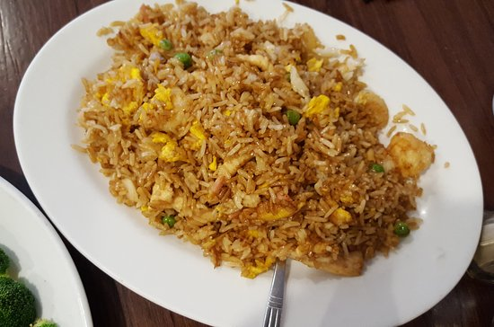

Fried Rice

Description
Delicious flavorful fried rice loaded with veggies, eggs, and meat.
Ingredients
- Cooked, chilled rice
- Eggs
- Carrots, onions, green onions, and peas
- Garlic
- Soy sauce
- Oyster sauce
- Toasted sesame oil
- Butter
Steps
- Using a small pat of butter, scramble some eggs in a large sauté pan, breaking them into small pieces as you go. Then transfer the eggs to a separate plate, and set aside.
- Return your sauté pan to the heat, and sauté the onions, carrots, peas and garlic until soft and cooked through.
- Then turn the burner to high heat. Scooch the veggies over to one side of the pan, melt the remaining butter in the other half, and add the chilled rice, soy sauce, and oyster sauce (if using). Then stir to combine with the veggies and continue sautéing the rice, stirring every 15-20 seconds or so for 3 minutes, or until you notice the rice and veggies starting to brown slightly.
- Remove pan from heat. And stir in your green onions, sesame oil, and scrambled eggs.
- Give the rice a taste, and season with salt and pepper, plus any extra soy sauce or sesame oil if needed.
- Then dish it up and serve nice and warm!